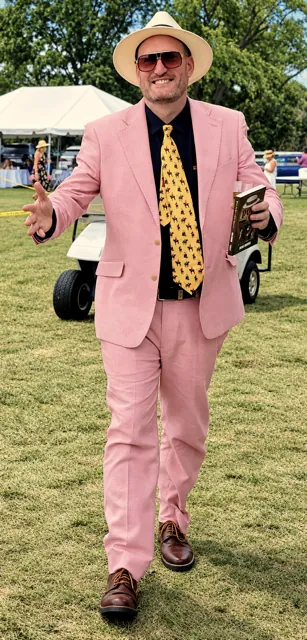

Some links on this page are affiliate links. If you buy through them we may earn a small commission, at no extra cost to you. Disclosure
What to wear to a polo match
Dress for a garden party, then remember it’s on a field: you’ll stand in the sun for two hours and walk out onto the turf at halftime. Get the shoes and the hat right and the rest is easy.
The short answer is smart casual
For most club matches, think of what you’d wear to a summer wedding reception that has moved outdoors. Light fabrics, a bit of colour, nothing you’d mind getting grass on. Wear whatever suits you; below are the classics.
What women wear to a polo match
A sundress or a linen midi is the classic, and a jumpsuit or wide-leg linen trousers work just as well. Florals and pastels fit the setting. At the dressier days, add a statement hat or a fascinator.
What men wear to a polo match
Chinos or linen trousers with a polo shirt or a button-down are right at almost any match, and a light blazer covers you if it turns dressier. Seersucker and pastels are welcome; this is one of the few places a pink suit draws compliments. A U.S. Polo Assn. polo shirt is a safe bet for a first match, and the brand belongs to the USPA, the sport’s own governing body.
Shoes are the one real rule
Polo is played on grass, and at halftime the crowd walks onto the field for the divot stomp, pressing the torn turf back into place. Stilettos sink and twist. Pick anything with a broad base:
- Wedges or block heels
- Loafers, boat shoes or clean white sneakers
- Flat sandals or espadrilles
- Boots, if it has rained

Bring a hat, and mean it
Matches usually run in the afternoon, on an open field with little shade. A hat is the most useful thing you’ll wear, and polo is one of the last places where a good one is expected. Don’s own answer is on the cover of his book: a straw boater. A Panama or any wide brim does the same job. At the dressier charity and tournament days, fascinators and statement hats come out; Etsy’s milliners are a good place to find one that nobody else is wearing.
Add sunglasses and sunscreen, and you’re set.
When to dress up, and when not to
A Sunday club match is relaxed: jeans and a nice shirt won’t turn heads. Tournament finals, charity matches and anything with a tent and a sponsor run dressier, and some print a dress code on the ticket, often “garden party” or “polo chic”. If you’re unsure, dress one notch up; a blazer can always come off.
The season depends on where you are. In the Midwest, Milwaukee included, it runs through the summer. In Florida it’s a winter sport. So “summer clothes” means summer wherever the match happens to be.
What to wear to a polo match in the fall
In the Midwest the season runs into September, and those late matches change the brief. Swap linen for light knitwear, a tweed or corduroy jacket, or a dress with a cardigan over it; ankle boots handle cooler, damper turf better than sandals. Even in summer, a long match can finish as the sun drops and open fields cool quickly, so a light layer earns its place by the last chukker.
What to bring to a polo match
- A waterproof picnic blanket or folding chairs, if you’re tailgating
- Compact binoculars: the field is 300 yards long
- Water, and something cold for between chukkers
- A copy of How to Talk Polo, so you know what the announcer means
And what the players wear
On the field it’s white trousers, tall brown boots, knee guards, a helmet and a numbered team shirt. The number tells you the position, 1 to 4, and the primer explains what each one does. The ponies get dressed too: legs wrapped, tails tied up out of the way of the mallets.
Dressed and ready? Read polo match etiquette before you go: where to stand, the ponies and the divot stomp.